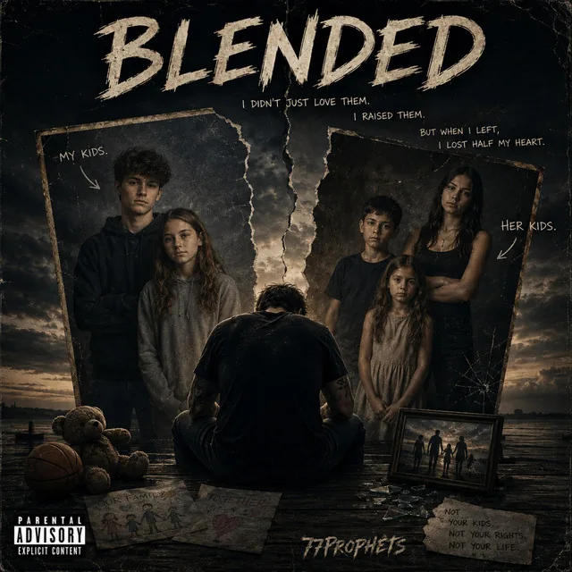
Blended
Psychedelic6:13 · Sep 18, 2026
Eighteen releases · Spotify and Apple Music · newest first

Psychedelic6:13 · Sep 18, 2026
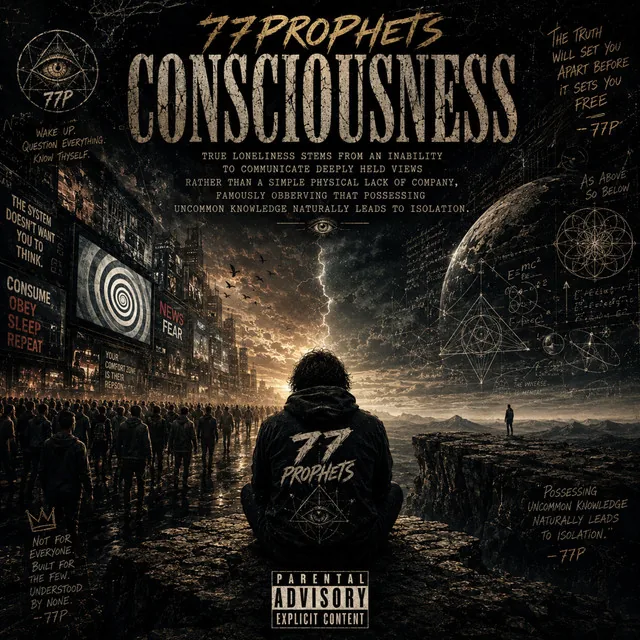
Progressive rock5:44 · Sep 18, 2026
Dark Romance Country4:04 · Sep 18, 2026
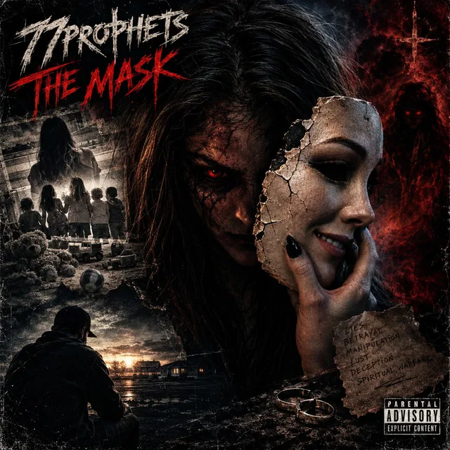
Progressive metal6:19 · Sep 18, 2026
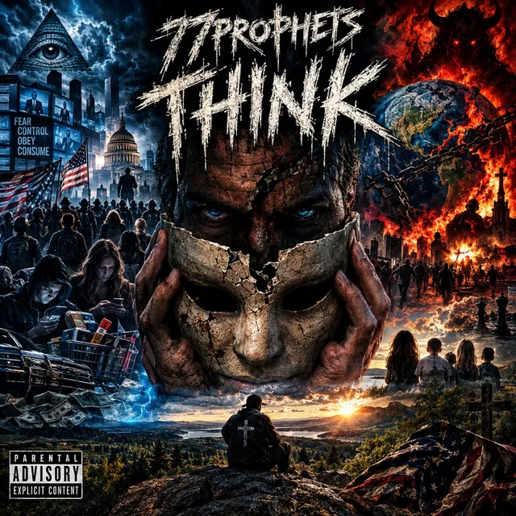
Nu metal4:52 · Sep 18, 2026
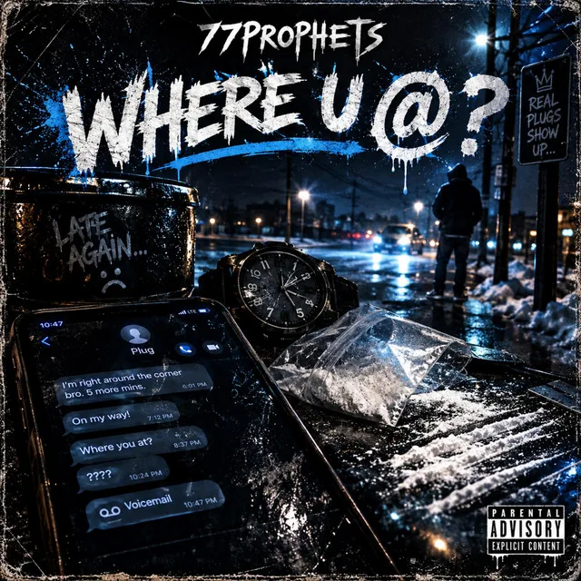
Rap3:47 · Sep 18, 2026
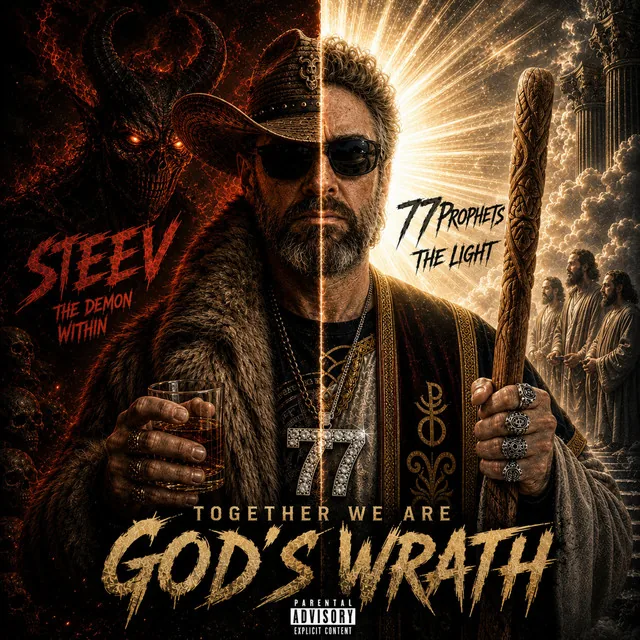
Industrial Prog Rock9:12 · Sep 18, 2026
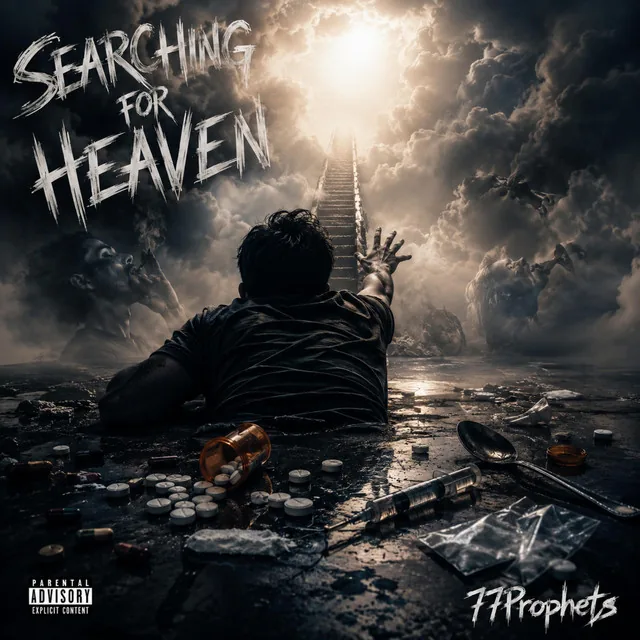
Progressive Rock5:16 · Aug 19, 2026
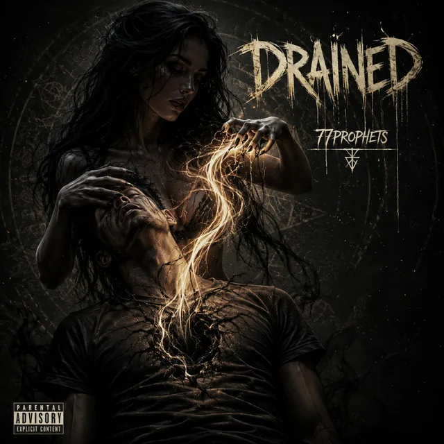
Witch house4:25 · Aug 11, 2026
Progressive rock5:32 · Jul 31, 2026
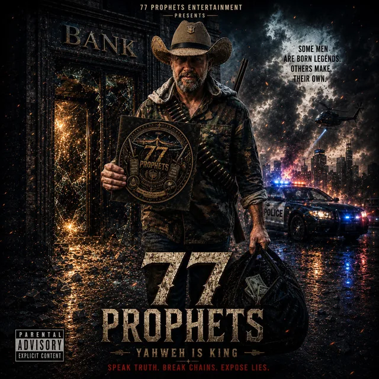
Dark country5:14 · Jul 17, 2026
Grunge rock4:34 · Jul 17, 2026
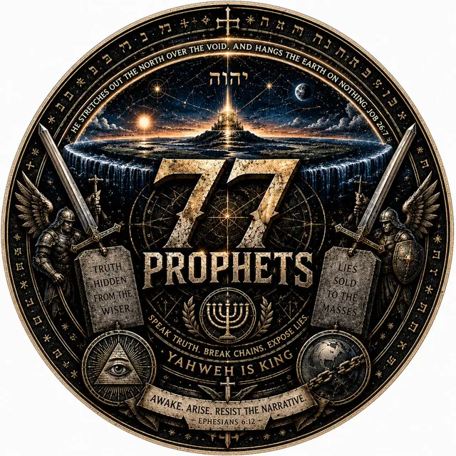
World Psychedelic Fusion4:25 · Jul 10, 2026
Jungle5:27 · Jul 1, 2026
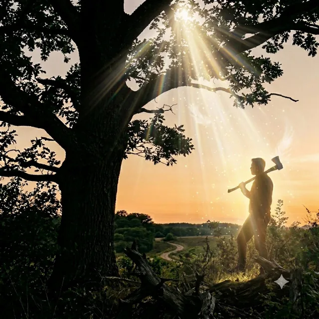
Industrial prog rock6:08 · Jun 8, 2026
Country5:27 · Jun 8, 2026
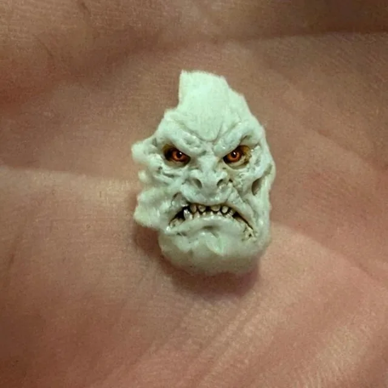
Progressive metal7:12 · Jun 5, 2026
Eighteen more, only on Suno · sixty-four songs in all at suno.com/@77prophets
Funk · 4:20 · Mar 8, 2026
Indie · 4:07 · Mar 23, 2026
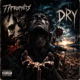
135 bpm · 3:19 · Apr 25, 2026
Funk · 4:26 · Mar 13, 2026
Tech-house · 4:55 · May 1, 2026
Progressive metal · 6:01 · Apr 21, 2026
Grunge · 3:45 · Mar 15, 2026
Disco · 3:37 · Apr 8, 2026
Country rock · 4:22 · Apr 4, 2026
Jungle · 5:47 · May 12, 2026
Female country · 4:26 · Mar 1, 2026
Psychedelic rock · 6:11 · Aug 1, 2026
Pirate shanty · 3:54 · Apr 9, 2026
Country · 2:14 · Mar 27, 2026
Classical crossover · 4:49 · Jul 23, 2026
Funk-fueled electronic music · 3:26 · Apr 21, 2026
Dub jungle · 4:32 · Jul 25, 2026
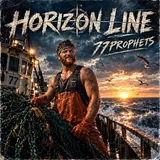
Grunge Rock · 7:11 · Sep 2026
Six films · YouTube
Pronounced “Sevens Prophets,” a nod to Heaven’s Prophets.
Former media producer and poet turned modern music creator. After decades away from the craft, I have returned to write, produce, and broadcast the truth. My published tracks feature 100% original lyrics designed to expose the ultimate deceptions against humanity. The globe is a lie; we live on a flat plain beneath a firmament. We are God’s creation, and my music exists to honor that holy reality.
Lyrics written by hand · music generated with Suno
Bookings · after-parties · remixes · playlists · collaborations